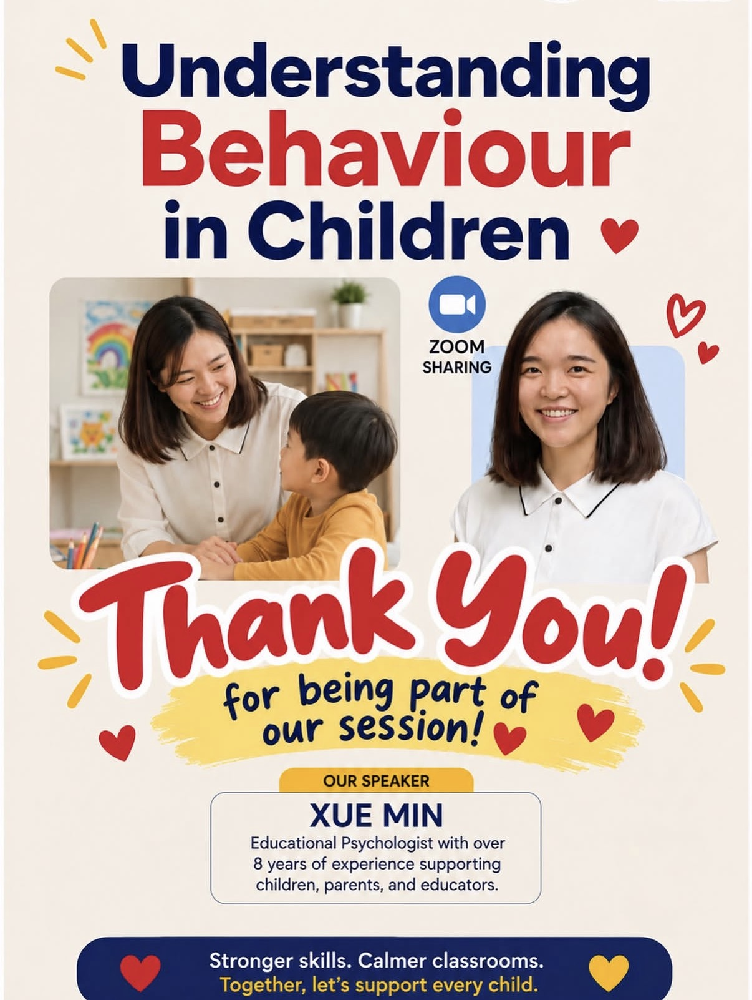
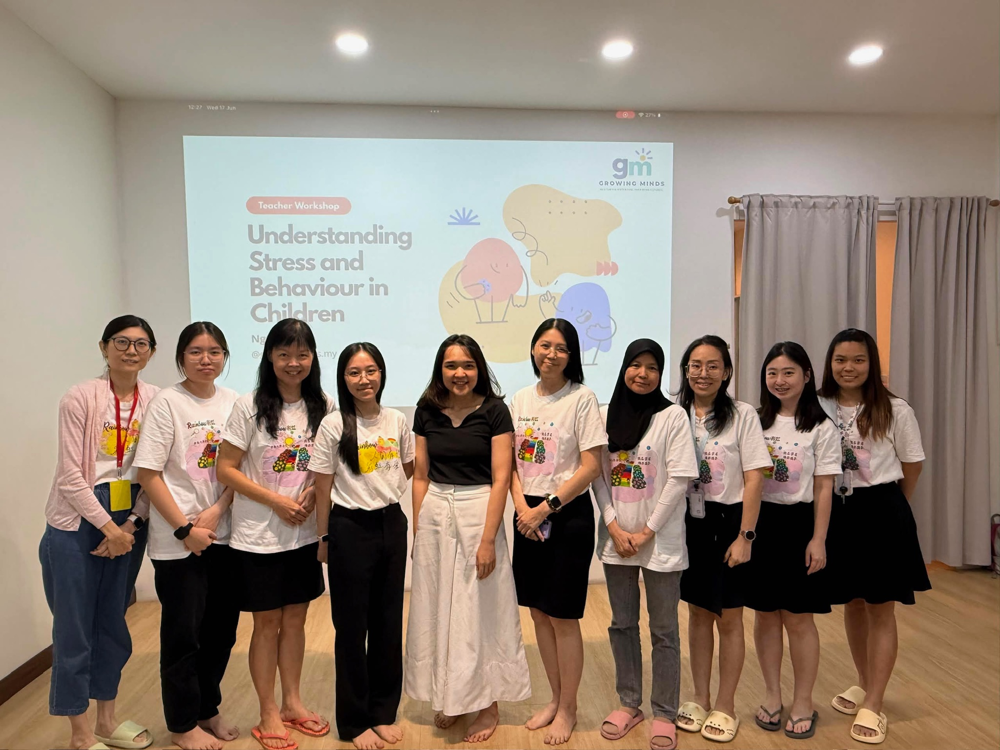
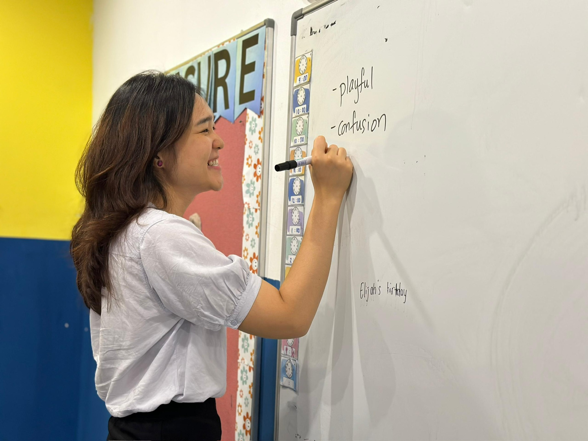
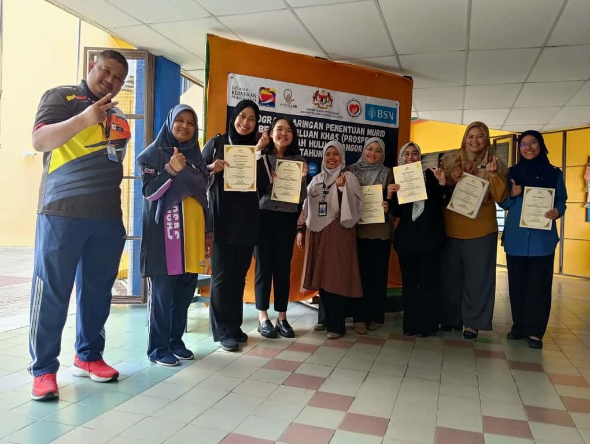

2026
理解孩子的行为（Understanding Behaviour in Children）
Growing Minds × ArtSense Studio
角色讲者，教育心理学家
受邀为教育工作者主持专业培训，探讨孩子行为背后可能的原因，以及老师如何更有效、更具支持性地回应。
重点 儿童行为 · 行为的功能 · 情绪调节 · 课堂策略


Growing Minds 是由教育心理学家带领的学习与成长中心，源于一个信念：孩子很早就被贴上标签，大家都在处理行为，却没有人问问行为背后究竟是什么。
部分参与项目，2023 至 2026 年。
Growing Minds × ArtSense Studio
角色讲者，教育心理学家
受邀为教育工作者主持专业培训，探讨孩子行为背后可能的原因，以及老师如何更有效、更具支持性地回应。
重点 儿童行为 · 行为的功能 · 情绪调节 · 课堂策略

Growing Minds × Rainbow Tuition and Enrichment Center
角色工作坊引导者
一场教师工作坊，探讨孩子行为背后可能发生的事：情绪、压力，以及实用的课堂支持，让老师以更多理解去回应孩子。
重点 情绪 · 行为 · 压力 · 师生关系

Sunnybank Hills Special Needs School
角色教师培训师
为教师举办的专业培训，内容包括实用的课堂管理策略，以及如何为有不同学习需要的学生营造更具支持性的学习环境。
重点 课堂管理 · 行为支持 · 特殊教育 · 融合学习

Program Saringan Penentuan Murid Berkeperluan Pendidikan Khas, Selangor
角色教育心理学家评估员
协助及早识别有额外教育与学习需要的孩子，与医生、护士、言语治疗师和职能治疗师携手合作，并有马来西亚教育心理学会（MEPS）和雪兰莪州教育局（JPN Selangor）参与。
重点 早期识别 · 学习需要 · 跨专业合作 · 学校支持

Alpro Pharmacy SugO365，与 Ascensia Diabetes Care 合作
角色儿童情绪健康引导者
受邀加入心理团队，为患有第一型糖尿病的孩子带领一堂课，帮助他们认识自己的情绪、应对方法和身边的支持系统。
重点 情绪健康 · 应对技巧 · 家庭支持

每个孩子都由固定的同一位老师陪伴，而这位老师的工作，会有上面两个层级负责监督。没有任何事情只靠个人判断。
每次都见到的那位老师，负责执行孩子的计划。
监督课程执行、质量与日常进展。
负责评估、规划，以及每个课程的专业方向。
我们先看孩子是怎样学习的，再决定怎样帮他。靠猜测订出来的计划，注定行不通。
我们从孩子已经会做的事开始。技能建立在优势之上，而不是一张“哪里不对”的清单。
以游戏为本、由孩子主导、贴近生活。孩子在动手做的过程中学会，大人在旁陪伴，而不是站在前面指挥。
我们一直乐于认识关心孩子学习与成长的教育工作者、治疗师和支援人员。如果这正是您，欢迎与我们联系。
查看 Growing Minds 职位空缺 →预约免费 20 分钟咨询电话，了解我们如何支持您的家庭。